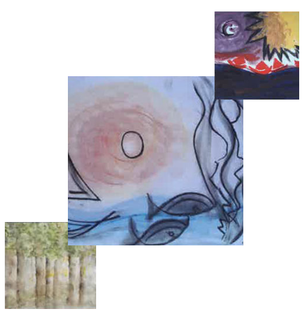

Kunst macht
Unsichtbares sichtbar
(Paul Klee)

Kunsttherapeutin
Gepr. Psychologische Beraterin VFP e.V.
Dipl. Sozialpädagogin
Erwachsenenbildung
Schulsozialarbeit
Medizinisch-berufliche Rehabilitation
Das sind Leistungen der Rentenversicherung und vielen bekannt
Ich sehe den Menschen als Ganzes, der die Lösung vieler Probleme in sich trägt.
Es ist mein Anliegen, Menschen Hilfe zur Selbsthilfe zu geben, Eigenverantwortung zu entwickeln und individuelle Ressourcen zu stärken. Die Kunsttherapie bietet dazu den Rahmen um lösungsorientiert und kreativ-gestalterisch zu wirken und menschliche Entwicklung möglich zu machen.
... Die Kunsttherapeutin schafft mit ihren Kenntnissen über kreative Prozesse den Rahmen und begleitet den Klienten beim kreativen Malen und Gestalten seinen individuellen Ausdruck der Belastung zu finden, besonders wenn das Reden darüber schwer fällt.
Langsam und nonverbal kann sich der Klient dem eigentlichen Problem oder seelischen Konflikt annähern. Damit kann nach und nach die Handlungsfähigkeit wieder entwickelt werden, es fällt leichter, darüber zu sprechen und Lebensperspektiven können in der Aufarbeitung neu geschaffen werden.
Es können dem Klienten Hilfen zur Selbstwahrnehmung der Belastung oder im Falle einer seelischen Beeinträchtigung gegeben werden. Die Psychologische Beraterin kennt den gesamten Bereich der klinischen Psychologie mit der Klassifikation nach ICD 11 und kann fachärztliche Diagnosen und Berichte beachten und professionelle Beratung anbieten oder an Fachärzte verweisen.
Da die Wartezeiten der niedergelassenen Psychotherapeuten aktuell sehr lang sind, kann die Psychologische Beratung die Bedürfnislage des Klienten klären helfen und durch ein ressourcenstärkendes Gesprächsangebot eine längere Wartezeit überbrücken.
Mit geeigneten Methoden der Kommunikation werden gemeinsam mit dem Klienten Ziele und Lösungswege erörtert und entwickelt, Widerstände und Alternativen besprochen und Entscheidungshilfen zur Bewältigung gegeben.
Bei Interesse erhalten Sie einen Termin für ein Erstgespräch in der Regel ohne lange Wartezeiten von ca. ein bis zwei Wochen. Dieses kann persönlich aber auch online per Zoom oder Teams geführt werden.
Weitere Termine werden je nach Absprache und in Abstimmung mit den individuellen Wünschen und Zielen vereinbart. In der Regel können die Termine wöchentlich bis monatlich vereinbart werden, je nach Befund und Bedarf.
Wenn der Termin nicht zustande kommt, ist dieser bis 24 Stunden vorher abzusagen. Andernfalls sind 50% des Honorars fällig.
In einem Erstgespräch geht es um das Kennenlernen und erfahren, welche Wünsche und Ziele bearbeitet werden sollen, wie der kreative Prozess behilflich sein kann und mit welchen Methoden gearbeitet werden soll, z. B. mit welchen Maltechniken / Kreide, Wasserfarben oder Gestalten und Modellieren , z. B. Ton in der Kunsttherapie gearbeitet werden soll.
Auch Entspannungsreisen und die Entspannungsmethode der Progressiven Muskelentspannung können eingesetzt werden. Der Therapierahmen, die Methoden und Zeitdauer werden vorab geklärt, wobei diese im kreativtherapeutischen Prozess angepasst werden und veränderbar sind je nach Situation der Klienten.
Einzelsitzungen dauern in der Regel 50 Minuten . Kunsttherapeutische Einzelsitzungen können bis zu 90 Minuten verlängert werden, wenn es sich aus dem Gestaltungsangebot ergibt, wenn das Malen und kreative Gestalten mehr Zeit benötigt.
Die Praxis ist nach Kleinunternehmerregelung von der Mehrwertsteuer befreit, so dass diese nicht erhoben wird.
Ermäßigungen können erfragt werden. Die Kosten werden nach jeder Sitzung fällig. Es kann gegen Quittung bar oder per Rechnung mit Überweisung gezahlt werden.
Das Angebot ist keine Kassenleistung, kann aber steuerlich abgesetzt werden als Außergewöhnliche Belastung wie z.B. privatärztliche Rechnungen. Wenn ein behandelnder Arzt eine Kunsttherapie vorschlägt, können die Kosten bei der gesetzlichen oder privaten Krankenkasse vorab beantragt werden. Eine Berichtserstellung mit Angaben der Zielvereinbarungen und der begleitenden Angebote, Verlauf wie Prognose kann auf Wunsch erstellt werden.
Sie erhalten ohne lange Wartezeiten einen Termin.Die Unabhängigkeit von Krankenkassen oder anderen Geldgebern ermöglicht einen großen Gestaltungsspielraum bezüglich der Therapiedauer.
Sie werden nicht aktenkundig, wenn Sie z. B. eine Versicherung abschließen müssen / Berufsunfähigkeit,Unfallversicherung